등급을 매긴 세 가지 기준
발표자는 숫자 두 개로 시작해요. 휴대폰 게임을 두 시간 해서 번 돈은 70원이었고, 비슷한 시기에 다른 부업은 한 달 매출 700만 원을 넘겼어요. 같은 시간을 넣어도 무엇을 고르느냐에 따라 결과가 이만큼 갈린다는 거예요. 그래서 6년 동안 부업을 소개하며 직접 해 본 것 중 AI로 할 수 있는 부업만 골라 표 한 장에 등급을 매겼어요.
등급을 가른 기준은 세 가지예요. 아래 카드에서 ①은 첫 돈을 받기까지의 속도, ②는 익숙해지면 하루 30분으로 줄일 수 있는지, ③은 한 번 만든 게 계속 돈이 되는지를 뜻해요.
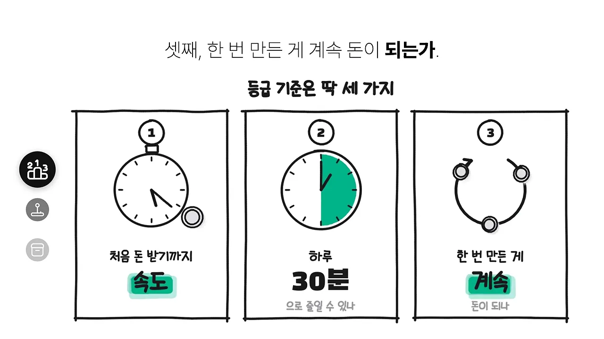
셋 중 가장 무겁게 본 건 세 번째예요. 부업은 시간을 돈으로 바꾸는 일인데, 넣은 시간만큼만 돈이 나오면 그건 부업이 아니라 두 번째 직장이라는 거예요. 그래서 같은 돈을 벌어도 한 번 만든 게 계속 팔리는 부업을 위로 올렸어요.
시간을 넣은만큼만 돈이 나오면 그건 부업이 아니라 두 번째 직장입니다.
— 영상 00:31
5티어·4티어: 넣은 만큼만 나오거나, 남도 금방 만들어요
맨 아래 두 칸에는 네 가지가 들어가요. 5티어 둘은 넣은 만큼만 나오는 일이고, 4티어 둘은 돈은 받지만 매번 사람 손이 들거나 남도 똑같이 만들 수 있는 일이에요.
앱테크·게임 — 7일에 약 3만 원
발표자는 게임하면 돈을 주는 앱 하나로 7일을 살아 봤어요. 가입하자마자 보너스 5,000원이 들어왔지만, 게임을 두 시간 더 하고 나서 늘어난 돈은 70원이었어요. 미션을 깼는데 포인트가 안 들어오거나, 레벨이 오르면 돈을 내야 다음 판으로 넘어가는 게임도 있었어요.
아래 화면 왼쪽이 7일 동안 모은 약 3만 원이에요. 오른쪽 막대를 보면 그중 대부분이 노란 '추천인' 칸이고, 회색 '게임' 칸은 아주 짧아요. 가족과 지인을 추천인으로 가입시켜 받은 돈이 거의 전부였다는 뜻이에요.
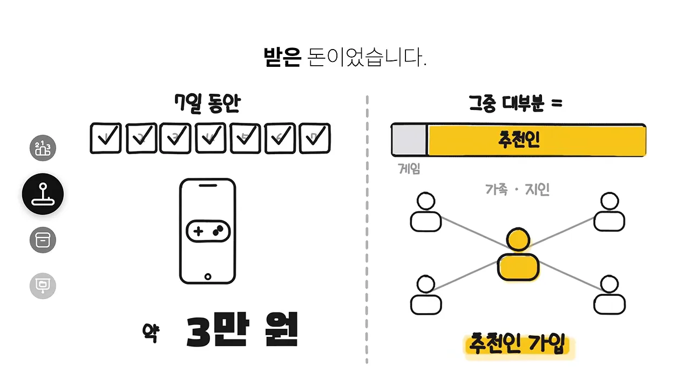
당근 부업 — 응모를 멈추면 수입도 멈춰요
이벤트와 체험단에 하루 10~20개씩 응모하고, 받은 물건을 리뷰한 뒤 당근에 파는 방식이에요. 생각보다 잘 당첨된대요. 문제는 부지런함 하나로만 굴러간다는 거예요. 화면 왼쪽 수도꼭지는 '응모'를 잠그면 컵에 물이 더 차지 않는다는 비유이고, 오른쪽 선반은 한 번 만들어 둔 것이 0개라는 걸 보여 줘요.
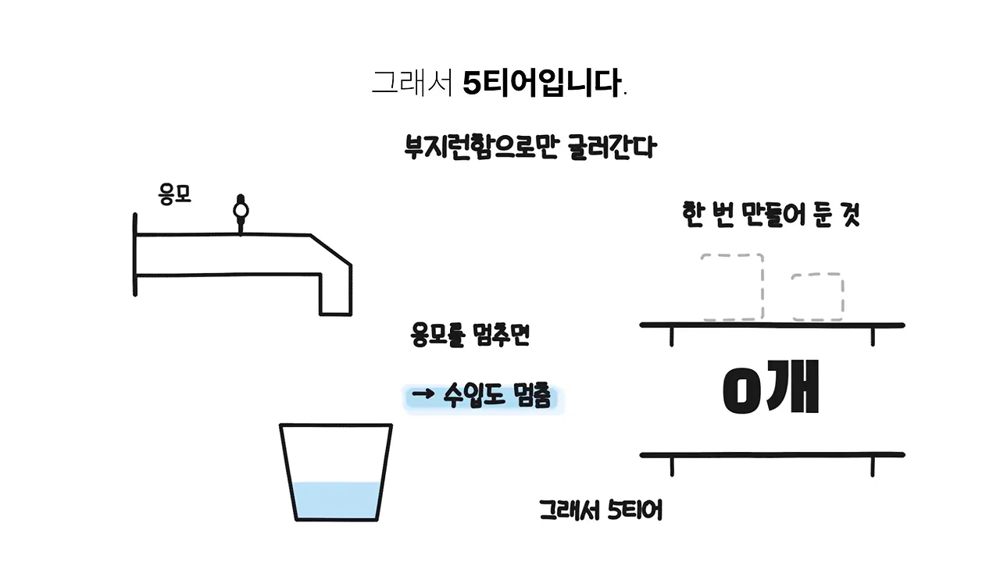
PPT·제안서 제작 — 수정 요청이 발목을 잡아요
회사, 학원, 강사, 병원처럼 발표 자료가 필요한 곳은 많아서 돈을 낼 사람은 확실히 있어요. AI로 자료를 읽고 슬라이드 순서를 잡는 시간도 확 줄었어요. 그런데도 4티어인 이유는 수정이에요. '글씨 조금만 키워 주세요', '아까 버전이 나았던 것 같아요' 같은 요청에는 AI가 아무리 빨라도 사람 시간이 들어가요. 한 건이 끝나면 다음 고객을 또 찾아야 하고요.
AI로 찍어낸 디지털 파일 — 남도 1분 만에 만들어요
플래너, 체크리스트, 다이어리 양식 같은 걸 AI로 100개 만들어 큰 마켓에 한꺼번에 올리는 방식이에요. '100개 중 하나는 팔리겠지' 하는 계산이죠. 발표자는 안 팔리는 상품 100개를 빨리 만드는 건 사업이 아니라고 말해요. 내가 1분 만에 만든 플래너는 남도 1분 만에 만들 수 있으니까요.
여기서 발표자가 하나를 미리 짚어 둬요. 1티어에도 템플릿이 나와요. 같은 템플릿인데 왜 4티어와 1티어로 갈리는지는 마지막 섹션에서 풀려요.
3티어: 돈은 되지만 손이 계속 가요
가운데 3티어는 돈은 확실히 되지만 세 기준 중 하나에서 크게 막혀요. 스마트스토어는 하루 30분에서, 홈페이지 제작은 '계속'에서, 블로그 자동화는 속도에서 걸려요.
스마트스토어 — 돈은 되지만 몸이 묶여요
발표자가 가장 오래 한 부업이에요. 직장에 다니며 투잡으로 시작했어요. 식자재 마트나 천 원 숍에서 브랜드 없는 물건을 사다 팔아 보고, 잘 팔리면 제품에 붙은 스티커를 보고 공장에 직접 연락해 거래를 텄어요. 아래 화면 위쪽 X 표시 열 개가 그동안의 실패이고, 아래 타임라인이 6개월쯤 뒤 한 달 100만 원 선에 닿는 모습이에요.
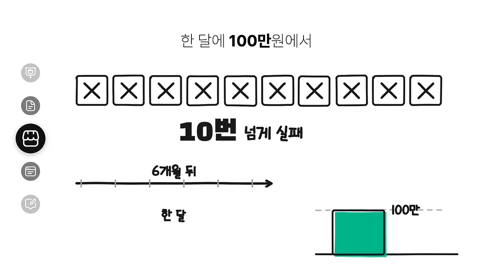
그래도 3티어인 이유가 있어요. 재고를 사야 하고, 포장하고 배송하고, 문의와 반품까지 받아야 해요. 하루 30분으로는 절대 안 굴러가요. 잘 팔리는 물건은 금방 똑같이 따라 하는 사람이 생기고요.
홈페이지 제작 — 한 번 만들면 거기서 끝나요
예전에는 코딩을 배워야 했지만, 지금은 AI에게 미용실 예약 홈페이지를 만들어 달라고 하면 하루 만에 그럴듯한 게 나와요. 처음 돈을 받아 보는 경험으로는 아주 좋아요. 아래 화면 왼쪽은 홈페이지를 한 번 만들어 주면 '끝', 오른쪽은 다음 달 달력 아래 '다음 달 매출 = 0'이에요.
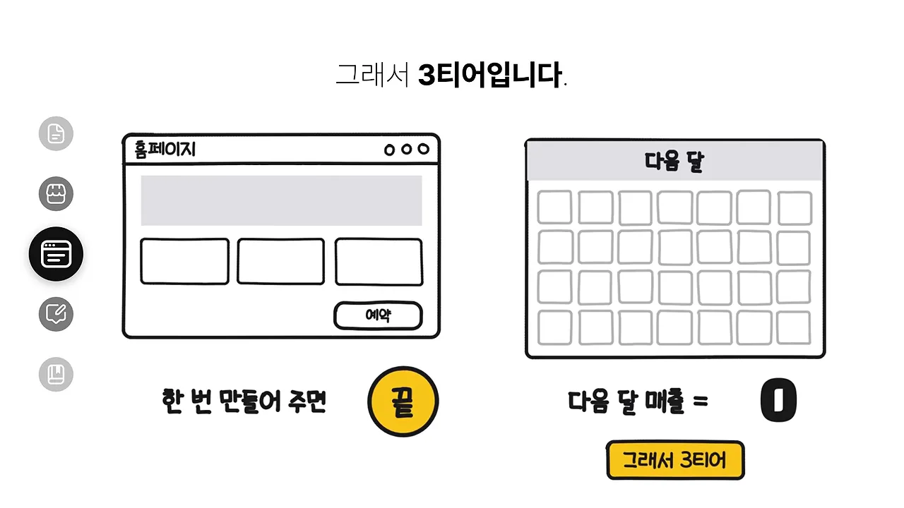
블로그 글 자동화 — 대량 생산이 아니라 시간 줄이기
AI로 글을 써서 블로그에 올리고, 방문자가 늘면 광고 수익을 받는 방식이에요. 발표자는 제대로 하면 된다고 하면서도 선을 그어요. 화면 왼쪽처럼 글 100개를 자동으로 올리는 건 자동화가 아니라 쓰레기를 대량으로 만드는 일이에요. 오른쪽처럼 사람이 '읽고 싶은 글'을 만드는 시간을 AI로 줄이는 게 맞는 방향이에요.
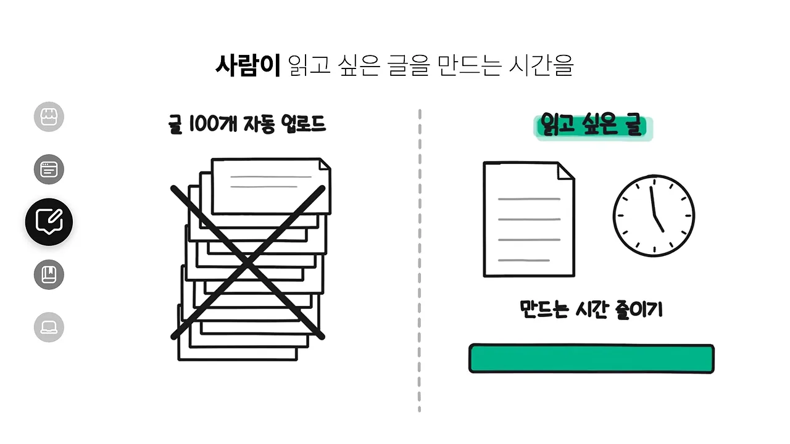
2티어: 한 번 만들면 계속 팔리지만, 손님이 먼저예요
2티어부터는 세 번째 기준, 한 번 만든 게 계속 돈이 되는가를 통과해요. 네 가지 모두 만들어 두면 내가 쉬어도 팔려요. 그런데 다들 같은 이유로 1티어에 못 올라가요. 살 사람이나 찾아올 사람을 먼저 모아야 하거든요.
PDF 판매 — 내가 해 본 과정을 상품으로
발표자는 블로그를 키우며 하루 방문자 1,000명을 만든 과정을 일기처럼 적어 팔아 봤어요. 생각보다 잘 팔렸고, 그때 번 돈과 경험이 지금 사업의 밑바탕이 됐대요. 중요한 건 AI에게 전자책 한 권을 써 달라고 하는 게 아니라는 점이에요. 내가 실제로 해 본 과정을 AI로 정리해서 상품으로 만드는 거예요.
아래 화면 위쪽 'PDF = 한 번 만들고 여러 명에게'가 2티어로 올라간 이유이고, 아래쪽 빨간 밑줄 '단, 사 줄 사람이 먼저'가 1티어에 못 간 이유예요.
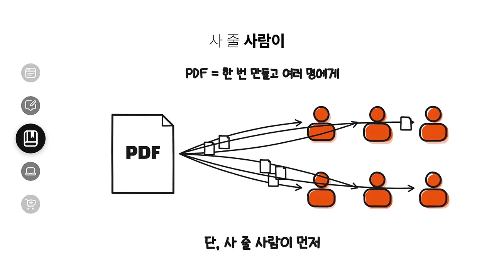
SaaS 사이트 — 10만 원짜리를 열 개
발표자는 바이브 코딩으로 영수증을 올리면 A4 한 장에 정리하고 금액까지 더해 주는 사이트를 만들어 봤어요. 이 사이트 하나로 매달 평균 10만 원 넘게 들어온대요. 작아 보여도 아무것도 안 해도 들어오는 돈이라, 10만 원짜리를 열 개 만들면 100만 원이 되는 구조예요. 1티어에 못 가는 이유는 사람들이 찾아오게 만드는 데 시간이 걸리고, 열 개 중 몇 개는 아무도 안 쓰기 때문이에요.
유튜브 쇼핑 쇼츠 — 한 명만 사도 수수료
제품 사진 한 장으로 짧은 소개 영상을 만들고, 영상 아래 쇼핑 링크로 팔리면 수수료를 받는 방식이에요. 아래 화면 왼쪽 원은 조회수 광고 수익을 수많은 영상이 잘게 나눠 먹는 모습이고, 오른쪽은 휴대폰 속 영상을 보고 한 명이 장바구니를 누르면 바로 수수료가 생기는 모습이에요.
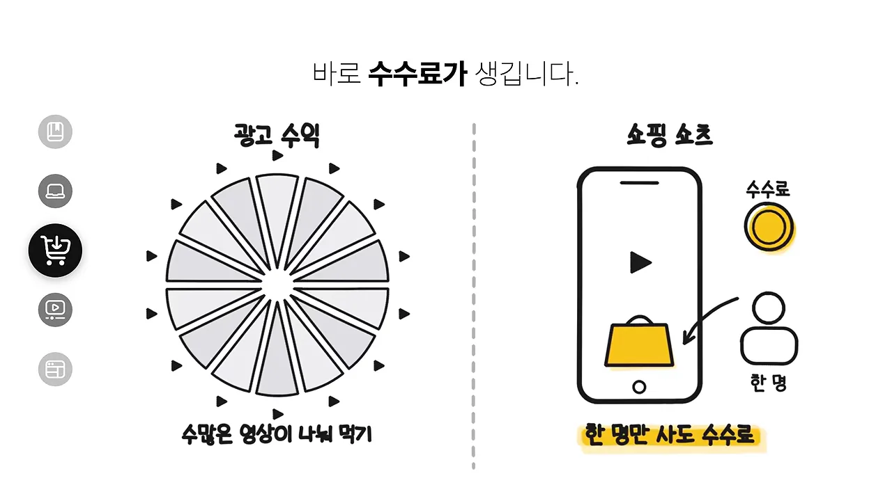
대신 꼭 지켜야 할 게 두 가지 있어요. 화면의 체크 상자처럼 광고라는 표시를 해야 하고, AI로 만든 영상이면 그것도 밝혀야 해요. 그리고 남들과 똑같은 영상이 아니라 내 한 줄 평이 들어가야 오래 간다고 해요.
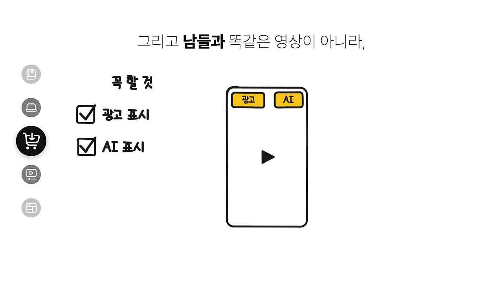
AI 쇼츠 자동화 — 포맷을 먼저 찾고, 그다음 자동화
발표자가 2티어 중 1티어에 가장 가깝다고 보는 부업이에요. 쇼츠 운영 챌린지를 해서 10일 만에 100만 뷰 영상을 만들었대요. 아래는 그 채널의 유튜브 스튜디오 화면이에요. 조회수 136.5만, 구독자 +2.6천이고, 그래프 위 빨간 표시가 100만을 넘긴 지점이에요.
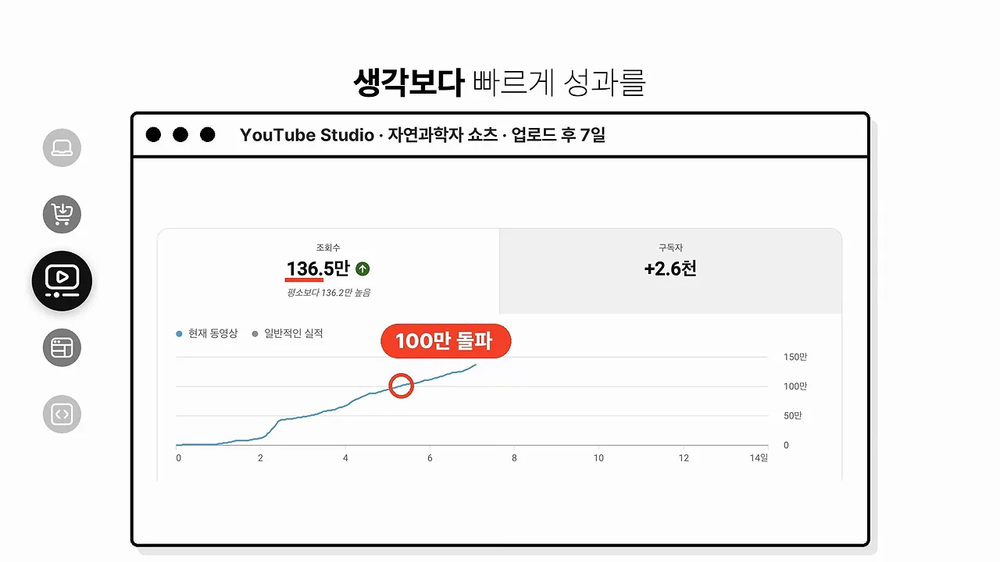
많은 사람이 AI로 아무 영상이나 하루 20개씩 찍어 내면 된다고 생각하는데, 발표자는 그건 안 된다고 해요. 비슷한 영상은 매일 쏟아지고, 유튜브도 찍어 낸 영상에는 수익을 주지 않아요. 진짜 방법은 순서가 반대예요. 아래 화면 ①처럼 사람들이 끝까지 보고 공유하는 틀, 곧 '터지는 포맷'을 먼저 하나 찾아요. 그다음 ②처럼 그 포맷을 매번 새 내용으로 채우는 과정을 자동화해요.
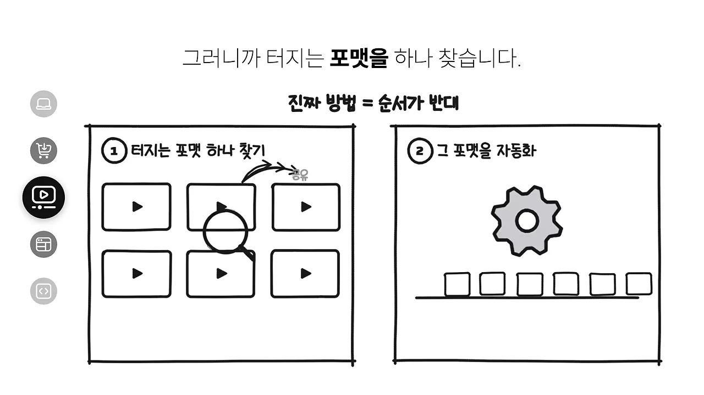
이게 갖춰지면 영상이 쌓일수록 채널도 같이 커져요. 그래도 1티어까지 못 가는 이유는 터지는 포맷을 찾는 것도 어렵고, 그 포맷이 자동으로 굴러가는 시스템을 만드는 건 더 어려워서예요. 대부분 여기서 지쳐 그만둔다고 해요.
1티어: 누군가의 귀찮은 일을 대신 풀어 줘요
드디어 1티어예요. 세 가지 모두 누군가의 귀찮은 일에서 시작해요. AI로 무엇을 만들 수 있는지가 아니라, 누가 어떤 일 때문에 돈을 낼지를 먼저 봐요.
템플릿·디자인 — 4티어와 무엇이 다를까요
4티어에도 템플릿이 있었어요. 같은 템플릿인데 하나는 4티어, 하나는 1티어예요. 발표자는 갈리는 지점을 두 가지로 꼽아요. 무슨 템플릿이냐, 그리고 어디서 파느냐예요.
먼저 무슨 템플릿이냐예요. 예쁜 플래너는 이제 누구나 AI로 1분 만에 만들어요. 반면 사람의 일을 대신해 주는 템플릿은 달라요. 작은 가게 사장님이 예약·재고·매출을 한 화면에서 관리하는 노션 템플릿, 클로드 같은 AI에 넣기만 하면 상세 페이지 글을 쓰거나 세금 자료를 정리해 주는 AI 스킬 템플릿이 그 예예요. 사는 사람의 시간을 줄여 주니까 값을 매기는 기준 자체가 달라진다는 거예요.
발표자도 배달 가게 사장님들이 쓰는 리뷰 스티커 디자인을 팔았어요. 그런데 사장님에게 필요한 건 디자인 파일이 아니라 내일 배달 봉투에 붙일 스티커였어요. 그래서 디자인을 고르면 인쇄까지 해서 보내 줬고, 이 부업 하나로 한 달에 100만 원 넘게 번 적도 있대요. 아래 화면이 바로 그 장면, 봉투에 웃는 얼굴 스티커를 붙이는 손이에요.
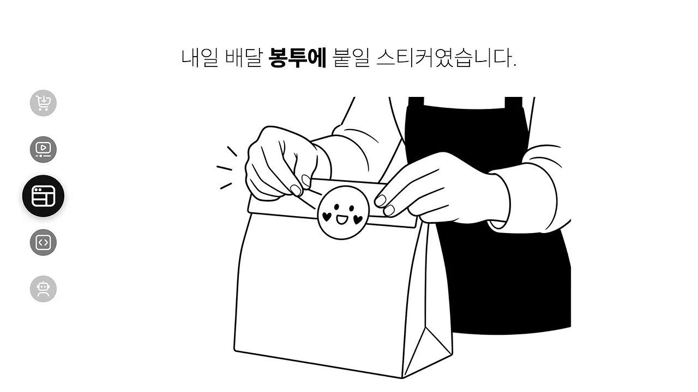
다음은 어디서 파느냐예요. 똑같은 템플릿이라도 수만 개가 깔린 큰 마켓에 올리면 결국 가격 싸움을 하다 4티어로 내려가요. 그 템플릿이 꼭 필요한 사람들이 모인 곳, 예를 들어 그 업종 사장님 커뮤니티나 내 블로그·유튜브·사이트에서 팔면 같은 파일이 몇 배 값에 팔려요. 그리고 다음 버전도 또 사요. 아래 화면이 이 비교를 한 장에 담았어요.
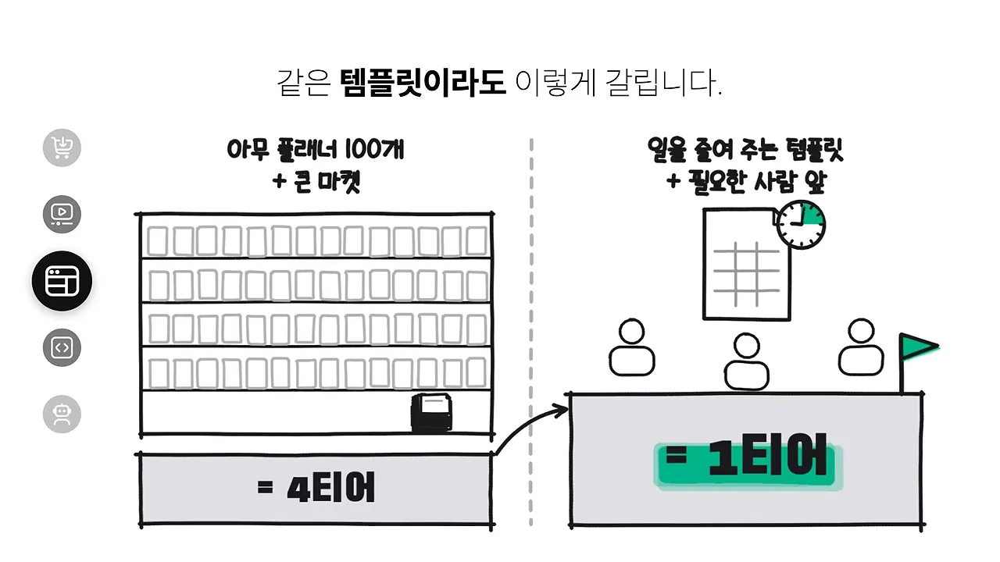
프로그램 개발 대행 — 'AI 프로그램'이 아니라 '버튼 한 번'을 팔아요
코딩을 못 하는데 남의 프로그램을 만들어 준다는 게 말이 안 되는 것 같지만, 지금은 된다고 해요. 발표자도 개발자가 아니지만 클로드 같은 AI로 회사 업무용 프로그램과 사이트를 직접 만들어 써요. 거창한 앱이 아니에요. 쇼핑몰 사장님이 매일 주문 엑셀을 정리하는 데 30분씩 쓴다면, 파일을 넣으면 정리와 매출 계산까지 끝내 주는 작은 프로그램이에요.
팔 때 하는 말이 중요해요. 아래 화면 왼쪽처럼 'AI 프로그램 만들어 드립니다'라고 하면 안 되고, 오른쪽처럼 '매일 30분 엑셀'을 '버튼 한 번'으로 끝낸다고 해야 해요.
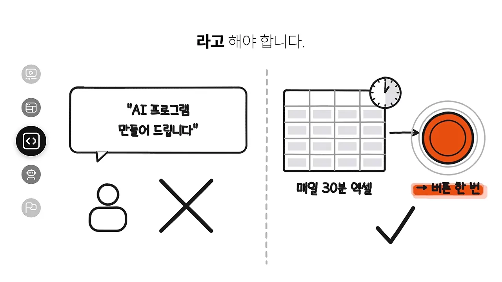
프로그램은 한 번 넘기고 끝이 아니에요. 엑셀 양식이 바뀌면 고쳐 줘야 해요. 귀찮아 보이지만 이게 매달 들어오는 관리비가 돼요.
업무 자동화 대행 — 일하는 순서 자체를 줄여요
프로그램 대행이 작은 도구 하나를 만들어 주는 거라면, 업무 자동화는 회사가 일하는 순서 자체를 줄여 주는 거예요. 직원이 매주 세 시간씩 경쟁사 가격을 조사해 엑셀에 옮긴다면, 그걸 30분으로 줄여 주는 식이에요. 아래 화면 위쪽처럼 처음부터 100% 자동으로 만들려고 하지 말고, 아래쪽처럼 AI가 80%를 하고 사람이 마지막 20%를 확인하게 만드는 게 훨씬 현실적이라고 해요.
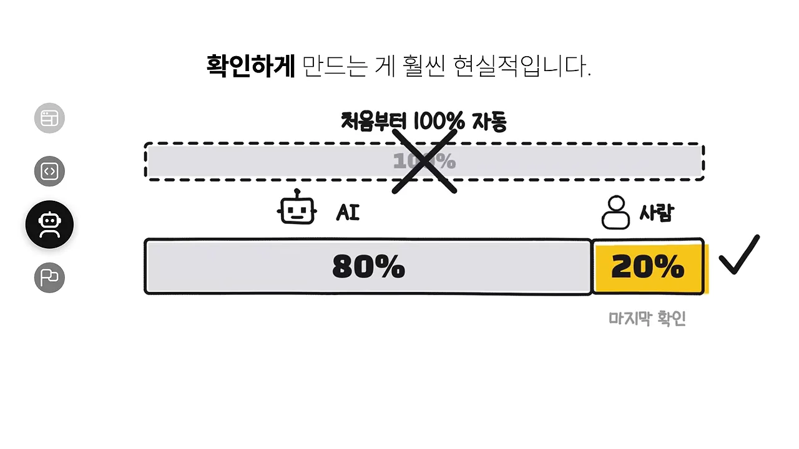
한 번 만들고 끝나는 게 아니라, 회사 일이 바뀔 때마다 같이 고쳐 주는 관계가 돼요. 그래서 반복 매출이 생겨요.
1티어 세 개의 공통점
발표자는 표가 다 채워진 뒤 1티어 세 개를 다시 보라고 해요. 전부 누군가의 문제를 대신 풀어 주고, 그 관계가 다음 달에도 이어져요. 영상에 흩어져 나온 예를 한 그림에 모으면 이렇게 돼요. 위에서 아래로 '누구의 귀찮은 일 → 대신 풀어 줌 → 다음 달에도 돈이 들어오는 이유' 순서예요.
아래에서 배운 걸 들고 올라가요
영상 마지막에 다 채워진 표가 나와요. 맨 위 1티어에 템플릿 판매·프로그램 대행·업무 자동화, 2티어에 PDF 판매·SaaS 사이트·쇼핑 쇼츠·AI 쇼츠 자동화가 있고, 아래로 갈수록 스마트스토어·홈페이지 제작·블로그 자동화(3티어), PPT 제작·디지털 파일(4티어), 앱테크·당근 부업(5티어)이 놓여요.
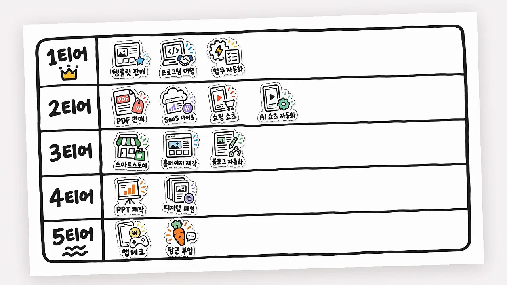
표만 보면 등급이 순서처럼 보이지만, 칸마다 막힌 이유를 함께 놓으면 왜 그 자리인지가 보여요. 영상에서 말한 이유만 모았어요.
| 등급 | 부업 | 발표자가 꼽은 이유 |
|---|---|---|
| 5티어 | 앱테크·게임 | 7일에 약 3만 원, 대부분 추천인 보상. 시급으로 몇십 원 |
| 5티어 | 당근 부업 | 응모를 멈추면 수입도 멈춤. 쌓아 둔 게 없음 |
| 4티어 | PPT·제안서 제작 | 수정 요청에 사람 시간이 계속 듦. 끝나면 다음 고객을 또 찾아야 함 |
| 4티어 | AI로 찍어낸 디지털 파일 | 남도 1분 만에 똑같이 만듦 |
| 3티어 | 스마트스토어 | 월 100만~200만 원까지 갔지만 재고·포장·배송·반품으로 몸이 묶임 |
| 3티어 | 홈페이지 제작 | 첫 돈은 빠르지만 한 번 만들면 끝. 다음 달 매출이 잘 안 생김 |
| 3티어 | 블로그 글 자동화 | 바로 노출되지 않아 첫 수익까지 오래 걸림 |
| 2티어 | PDF 판매 | 여러 명에게 팔 수 있지만 사 줄 사람이 먼저 있어야 함 |
| 2티어 | SaaS 사이트 | 사이트 하나로 매달 10만 원 넘게. 사람을 모으는 데 시간이 걸리고 몇 개는 아무도 안 씀 |
| 2티어 | 유튜브 쇼핑 쇼츠 | 한 명만 사도 수수료. 광고·AI 표시와 내 한 줄 평이 필요 |
| 2티어 | AI 쇼츠 자동화 | 1티어에 가장 가까움. 터지는 포맷 찾기와 자동화 시스템 만들기가 어려움 |
| 1티어 | 템플릿·디자인 | 남의 일을 줄여 주는 템플릿을 필요한 사람들 앞에서 팜. 다음 버전도 또 삼 |
| 1티어 | 프로그램 개발 대행 | 매일 30분 엑셀을 버튼 한 번으로. 양식이 바뀔 때마다 관리비 |
| 1티어 | 업무 자동화 대행 | 회사 일이 바뀔 때마다 같이 고쳐 주는 관계. 반복 매출 |
발표자 자신도 5티어에서 올라왔대요. 앱테크로 70원을 벌면서 사람들이 왜 이런 앱에 시간을 쓰는지 봤고, 스마트스토어를 하면서 사장님들이 무엇을 귀찮아하는지 알게 됐어요. 아래 계단 그림이 그 길이에요. 앱테크에서 스마트스토어, 배달 스티커를 거쳐 지금은 AI로 만드는 사이트와 프로그램에 와 있어요.
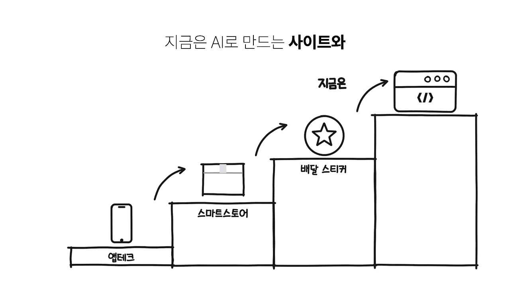
그래서 이 표에서 가장 중요한 건 등급이 아니라, 아래에서 배운 걸 위로 들고 올라가는 거라고 정리해요. 그리고 오늘 딱 하나만 해 보라고 해요. 2티어나 1티어 중 하나를 고르고, 아는 사장님 한 명의 귀찮은 일을 하나 찾아요. 그걸 AI로 해결해서 처음으로 5만 원이라도 받아 보는 거예요. 아래 화면이 그 세 단계예요.
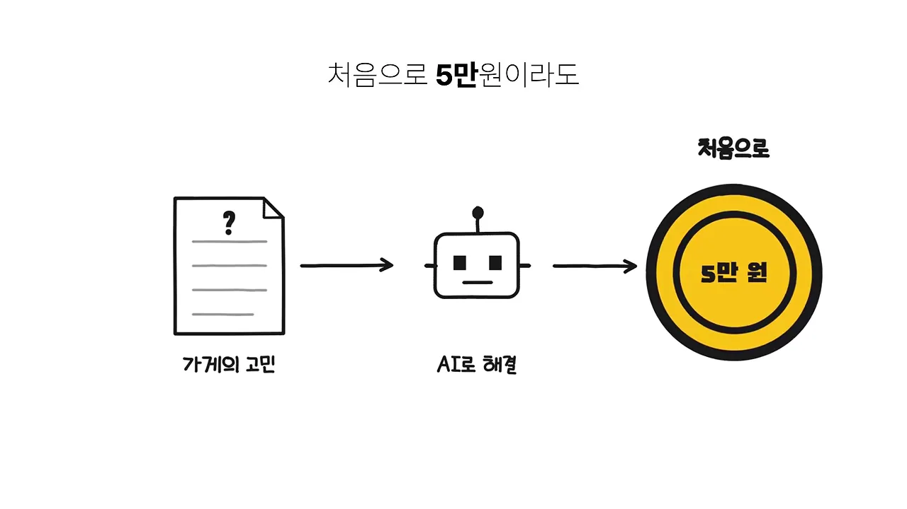
AI로 뭘 만들 수 있지가 아니라 누가 무엇 때문에 여기에 돈을 낼까? 질문을 이렇게 바꾸는 순간부터 진짜 부업이 시작됩니다.
— 영상 09:45